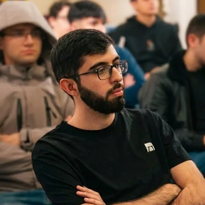
Computer Science student at Holberton School with five years of enterprise IT experience. Front ends in React and TypeScript, back-end APIs in Python and Node.js with PostgreSQL.
Computer Science student at Holberton School with five years of enterprise IT experience. Front ends in React and TypeScript, back-end APIs in Python and Node.js with PostgreSQL.
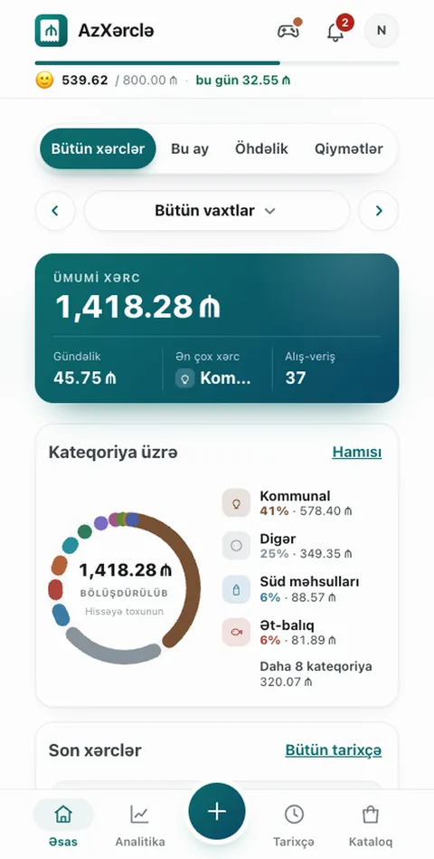
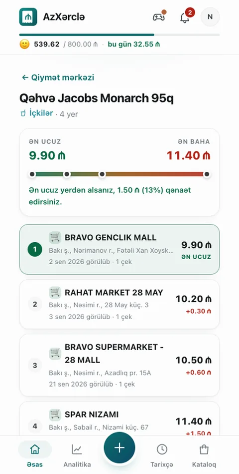
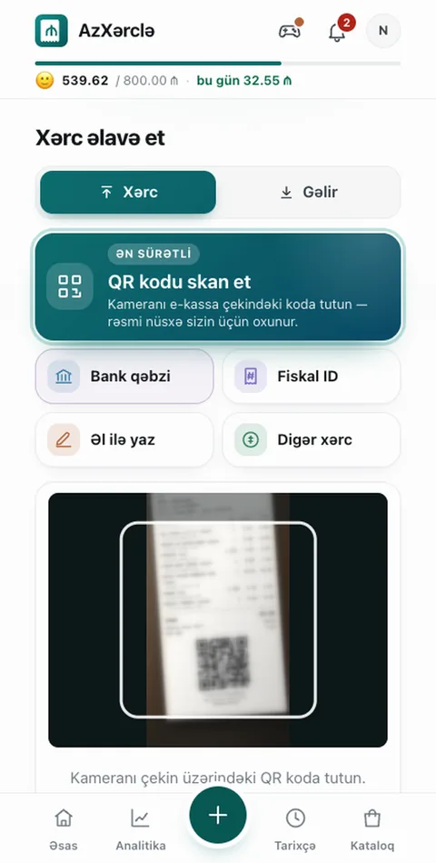
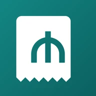
Android app · v1.4Scan the QR code on an Azerbaijani e-kassa receipt and the items, quantities and prices are read for you — then filed into categories, a monthly budget with a safe to spend today figure, and a price comparison across shops built from scanned receipts.
It began as a React and Flask web prototype and is now a local-first Android app: the database runs on the phone, receipts are read with on-device OCR, and cloud backup is optional. Camera and bank-receipt import, PDF statements, debts and reminders, home-screen widgets, PIN and fingerprint lock, in Azerbaijani, Russian and English.
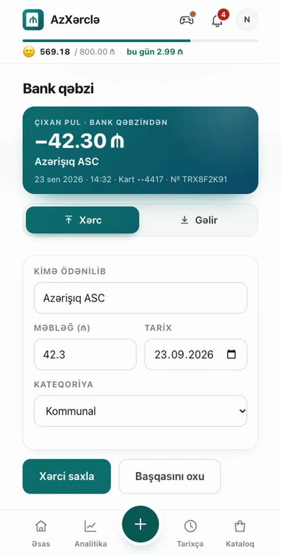
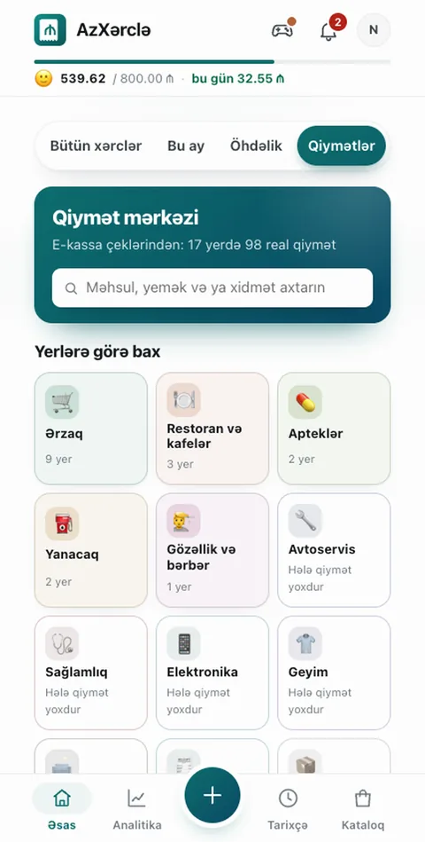
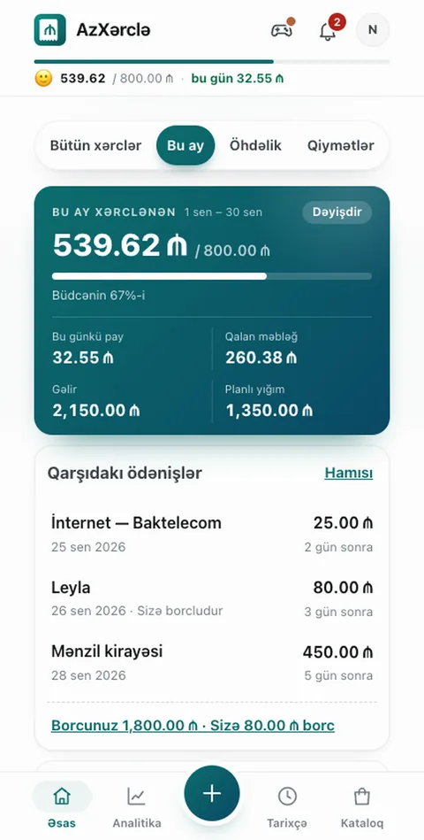
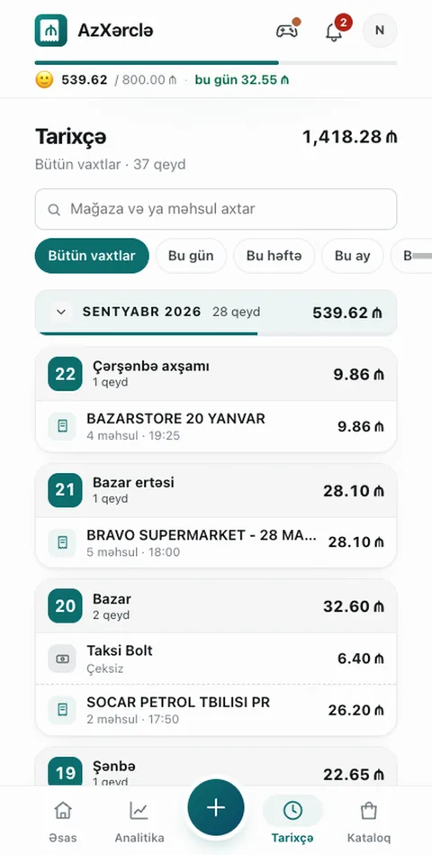
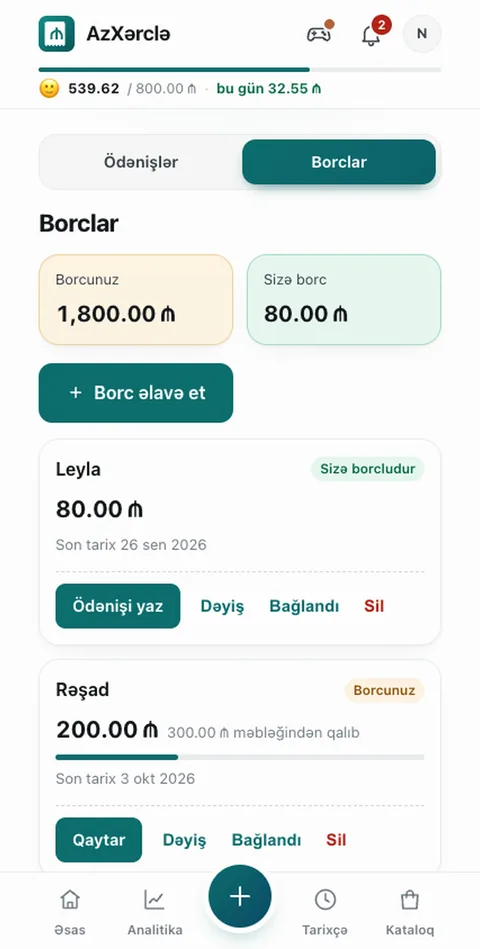
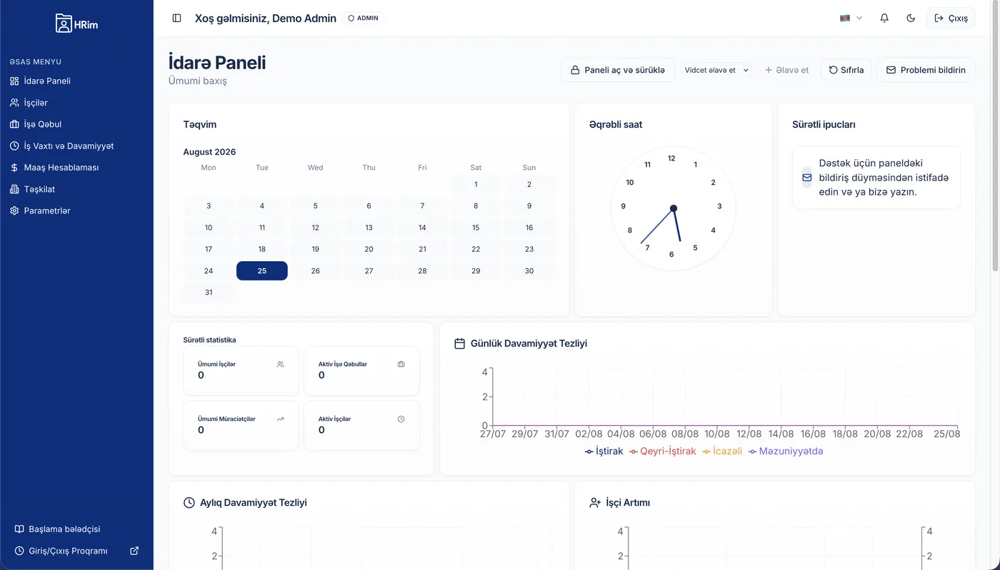
One system for a company's HR processes: employee records, payroll and timesheets, a public job listing and application page, and a PWA for clocking in and out.
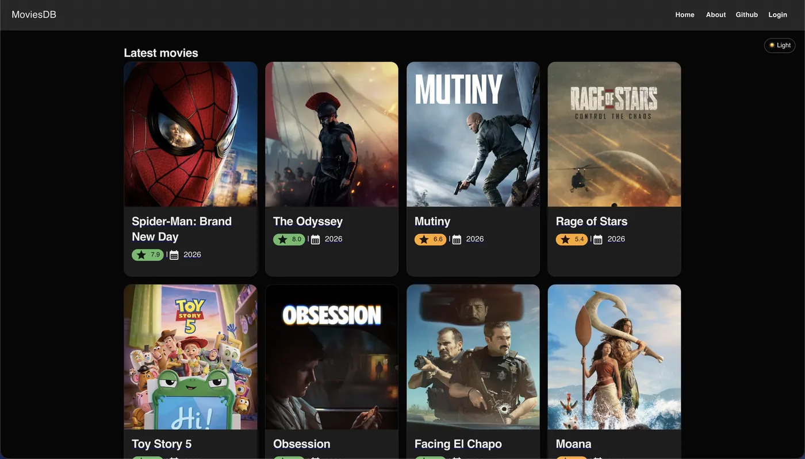
Front-end app pulling the latest films from a public API, with user accounts, a favourites list, and rendering optimisations for fast load and search.
Separate HR and candidate workspaces for uploading a CV, scoring it against job requirements, and reloading saved analyses behind JWT-authenticated API routes.
Swipe-based matching with real-time chat and JWT auth; containerised with Docker Compose, deployed on Railway, localised in Azerbaijani and English.
Complete storefront — catalogue, search, cart, checkout, order history and user accounts — plus an admin panel for managing products and orders.
AI coding assistants were part of my workflow on AzXərclə, HRIM, CVPilot and Tapis. MoviesDB and the e-commerce store were written entirely by hand.
Computer Science student at Holberton School with five years of enterprise IT experience.
I have built web applications end to end — front ends in React and TypeScript, back-end APIs in Python and Node.js with PostgreSQL — alongside a practical grounding in Linux, networking and production systems. Open to front-end, back-end or systems work; I am looking for a team I can learn from while I develop depth in one of them.
Maintain the company's IT infrastructure — servers, networks and workstations. Administer and monitor ERP systems, act as the main technical point of contact for staff, and own IT procurement and vendor relationships.
C and shell, data structures and algorithms, system design, and full-stack web development with Python, Flask, JavaScript and React.
Passed the technical interview process and received an offer for the internship programme.
Front-End Development — HTML, CSS, JavaScript.
B.Sc. Accounting and Auditing.